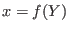
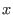
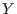

| [ < ] | [ > ] | [ << ] | [ Up ] | [ >> ] | [Top] | [Contents] | [Index] | [ ? ] |
The model is declared inside a model block:
Description
The equations of the model are written in a block delimited by
model and end keywords.
There must be as many equations as there are endogenous variables in the
model, except when computing the unconstrained optimal policy with
ramsey_policy.
The syntax of equations must follow the conventions for MODEL_EXPRESSION as described in Expressions. Each equation must be terminated by a semicolon (‘;’). A normal equation looks like:
MODEL_EXPRESSION = MODEL_EXPRESSION; |
When the equations are written in homogenous form, it is possible to omit the ‘=0’ part and write only the left hand side of the equation. A homogenous equation looks like:
MODEL_EXPRESSION; |
Inside the model block, Dynare allows the creation of model-local
variables, which constitute a simple way to share a common expression
between several equations. The syntax consists of a pound sign
(#) followed by the name of the new model local variable (which
must not be declared as in Variable declarations), an equal
sign, and the expression for which this new variable will stand. Later
on, every time this variable appears in the model, Dynare will
substitute it by the expression assigned to the variable. Note that the
scope of this variable is restricted to the model block; it cannot be
used outside. A model local variable declaration looks like:
# VARIABLE_NAME = MODEL_EXPRESSION; |
Options
linearDeclares the model as being linear. It spares oneself from having to
declare initial values for computing the steady state, and it sets
automatically order=1 in stoch_simul.
use_dll
Instructs the preprocessor to create dynamic loadable libraries (DLL)
containing the model equations and derivatives, instead of writing those
in M-files. You need a working compilation environment, i.e.
a working mex command (see Software requirements for more
details). Using this option can result in faster simulations or
estimations, at the expense of some initial compilation
time.(2)
blockPerform the block decomposition of the model, and exploit it in computations. See Dynare wiki for details on the algorithm.
bytecodeInstead of M-files, use a bytecode representation of the model, i.e. a binary file containing a compact representation of all the equations.
cutoff = DOUBLEThreshold under which a jacobian element is considered as null during
the model normalization. Only available with option
block. Default: 1e-15
mfs = INTEGERControls the handling of minimum feedback set of endogenous
variables. Only available with option block. Possible values:
0All the endogenous variables are considered as feedback variables (Default).
1The endogenous variables assigned to equation naturally normalized (i.e. of the form  where  does not appear in ) are potentially recursive variables. All the other variables are forced to belong to the set of feedback variables.
2In addition of variables with mfs = 1 the endogenous variables
related to linear equations which could be normalized are potential
recursive variables. All the other variables are forced to belong to
the set of feedback variables.
3In addition of variables with mfs = 2 the endogenous variables
related to non-linear equations which could be normalized are
potential recursive variables. All the other variables are forced to
belong to the set of feedback variables.
no_staticDon’t create the static model file. This can be useful for models which don’t have a steady state.
Example 1: elementary RBC model
var c k; varexo x; parameters aa alph bet delt gam; model; c = - k + aa*x*k(-1)^alph + (1-delt)*k(-1); c^(-gam) = (aa*alph*x(+1)*k^(alph-1) + 1 - delt)*c(+1)^(-gam)/(1+bet); end; |
Example 2: use of model local variables
The following program:
model; # gamma = 1 - 1/sigma; u1 = c1^gamma/gamma; u2 = c2^gamma/gamma; end; |
…is formally equivalent to:
model; u1 = c1^(1-1/sigma)/(1-1/sigma); u2 = c2^(1-1/sigma)/(1-1/sigma); end; |
Example 3: a linear model
model(linear); x = a*x(-1)+b*y(+1)+e_x; y = d*y(-1)+e_y; end; |
Dynare has the ability to output the list of model equations to a
LaTeX file, using the write_latex_dynamic_model command. The
static model can also be written with the
write_latex_static_model command.
Description
This command creates a LaTeX file containing the (dynamic) model.
If your ‘.mod’ file is ‘FILENAME.mod’, then Dynare will create a file called ‘FILENAME_dynamic.tex’, containing the list of all the dynamic model equations.
If LaTeX names were given for variables and parameters (see section Variable declarations), then those will be used; otherwise, the plain text names will be used.
Time subscripts (t, t+1, t-1, …) will be
appended to the variable names, as LaTeX subscripts.
Note that the model written in the TeX file will differ from the model declared by the user in the following dimensions:
Description
This command creates a LaTeX file containing the static model.
If your ‘.mod’ file is ‘FILENAME.mod’, then Dynare will create a file called ‘FILENAME_static.tex’, containing the list of all the equations of the steady state model.
If LaTeX names were given for variables and parameters (see section Variable declarations), then those will be used; otherwise, the plain text names will be used.
Note that the model written in the TeX file will differ from the model declared by the user in the some dimensions (see write_latex_dynamic_model for details).
Also note that this command will not output the contents of the
optional steady_state_model block (see steady_state_model);
it will rather output a static version (i.e. without leads and
lags) of the dynamic model declared in the model block.
| [ < ] | [ > ] | [ << ] | [ Up ] | [ >> ] |
This document was generated by Sébastien Villemot on May 24, 2011 using texi2html 1.82.